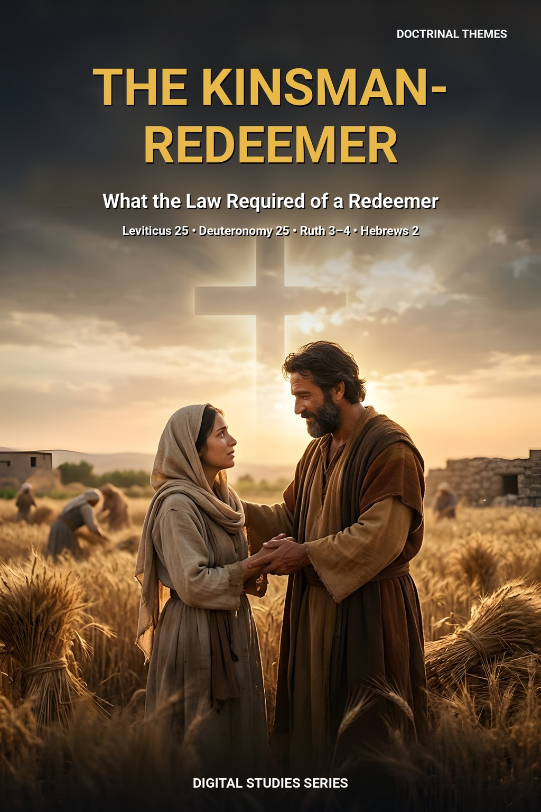
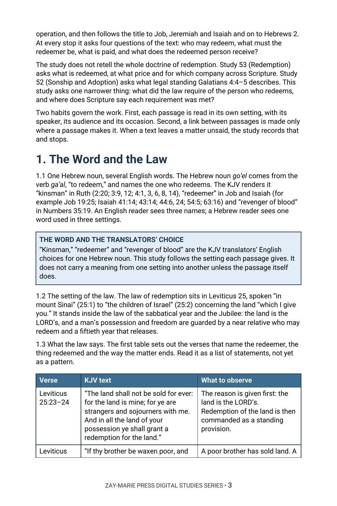

The Kinsman-Redeemer
What the Law Required of a Redeemer
What does the law of the kinsman ask of the one who redeems, and where does Scripture say each requirement was met?
Few words in the Old Testament carry as much weight as “redeemer,” and few are read as quickly. Leviticus 25 states the law, Ruth shows it at the gate, Job, Jeremiah and Isaiah use the title, and Hebrews 2 speaks of brethren, flesh and blood and death.
This study asks four questions of every passage: who may redeem, what must the redeemer be, what is paid, and what does the redeemed person receive. It records what each text says and stops where the text stops.
Ask What the Law Required
You will follow one Hebrew noun through its KJV renderings, read Leviticus 25:23–55 for who may redeem and what the price is, walk through Ruth 2:20 to 4:17 step by step, set the law of the husband’s brother beside the law of the near redeemer, compare Job 19:25, Jeremiah 32 and Isaiah’s titles for the LORD, and test Hebrews 2:14–17 against the requirements you have gathered.
Readers who already own Study 53 (Redemption), Study 52 (Sonship and Adoption) or Study 71 (The Genealogies of Jesus) will recognize adjoining ground. Study 53 asks what is redeemed, at what price and for which company across Scripture; this study asks only what the law required of the person who redeems. Study 52 asks what legal standing Galatians 4:4–5 describes, which this study does not take up. Study 71 reads the two genealogies of Jesus, and this study reads Ruth for the steps of the redeemer and does not follow the line. The question this study alone answers: what did the law require of the one who redeems, and where does Scripture say each requirement was met?
Related Reading
Digital Studies
Study 53 — Redemption Follow what is redeemed, at what price and for which company across Scripture; Study 82 asks only what the law required of the one who redeems.
Study 52 — Sonship and Adoption Read the legal standing Galatians 4:4–5 describes; Study 82 does not take up adoption.
Study 71 — The Genealogies of Jesus Read the two genealogies and their claims for Jesus; Study 82 reads Ruth for the redeemer’s steps and does not follow the line.
Follow the Office Through Its Own Verses
One Noun, Many Words
Follow the Hebrew noun through the KJV’s “kinsman,” “redeemer” and “revenger of blood,” noting what each passage calls the person who acts.
The Law of Leviticus 25
List who may redeem, what may be redeemed, how the price is set and what the law says happens at the Jubilee.
The Threshing Floor and the Gate
Walk through Ruth in order, marking the nearer kinsman, the two matters, the shoe and the witnesses.
Two Laws, Kept Apart
Distinguish the law of the near redeemer from the law of the husband’s brother and mark where Ruth’s own words point to each.
Beyond the Family
Compare Job 19:25, Jeremiah 32:6–15 and Isaiah’s titles for the LORD, recording who acts, for whom, and what is said to be done.
Hebrews 2:14–17 Tested
Sort what the passage states from what it leaves unsaid, and learn what the study does not claim.
Read the Word in Its Context
Leviticus 25:25–27
A poor brother’s sold possession, a kinsman who may redeem and a price counted by the years.
Leviticus 25:47–49
A brother sold to a stranger and the relatives named in order of nearness.
Numbers 35:19
The same Hebrew noun in the setting of a slain kinsman.
Deuteronomy 25:5–10
The brother’s duty, the refusal and the shoe.
Ruth 3:12–13
A kinsman nearer than Boaz, and the words of a vow.
Ruth 4:1–12
The gate, the elders, the two matters and the witnesses.
Job 19:25
“My redeemer liveth,” reported as written in the speaker’s own setting.
Hebrews 2:14–17
Flesh and blood, death, brethren and the seed of Abraham, read in their own letter.
A Rule for Reading This Subject
Read each passage in its own setting, with its speaker, its audience and its occasion. Make a link between passages only where a passage makes it.
When a text leaves a matter unsaid, record that and stop.
Preview the Study Before You Purchase
Click any page to enlarge it for reading.



The Word and the Law
See how the study sets one Hebrew noun and the law of Leviticus 25 in a table for observation.
A Focused Study of the Redeemer in the Law, Ruth and Beyond
16-Page Digital PDF
Approved cover and 15-page numbered interior.
6 Teaching Sections
A text-driven study from the word and the law to the requirements side by side.
Callout Boxes
Five callout boxes marking the study’s key working rules.
KJV Tables
Tables setting out the key passages for observation.
Scripture-Tracing Exercise
Guided traces through the passages the study relies on.
Guided Further Study
Passage groups for deeper reading.
Review Questions
Questions testing the study’s markers and method.
Final Synthesis Exercise
A written synthesis drawing the whole study together.
The Kinsman-Redeemer
16-page digital PDF · For personal use